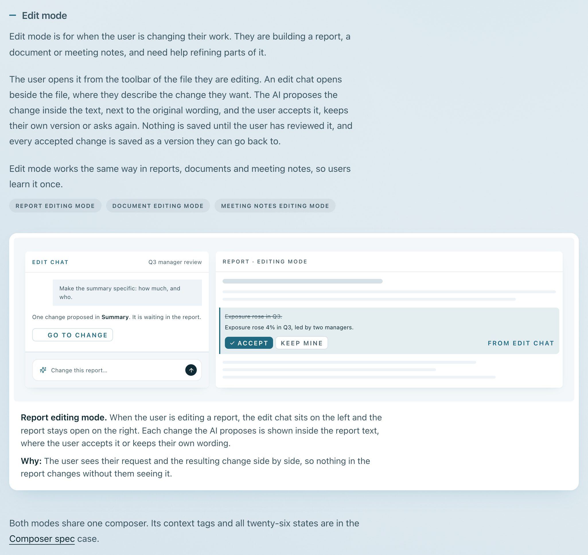
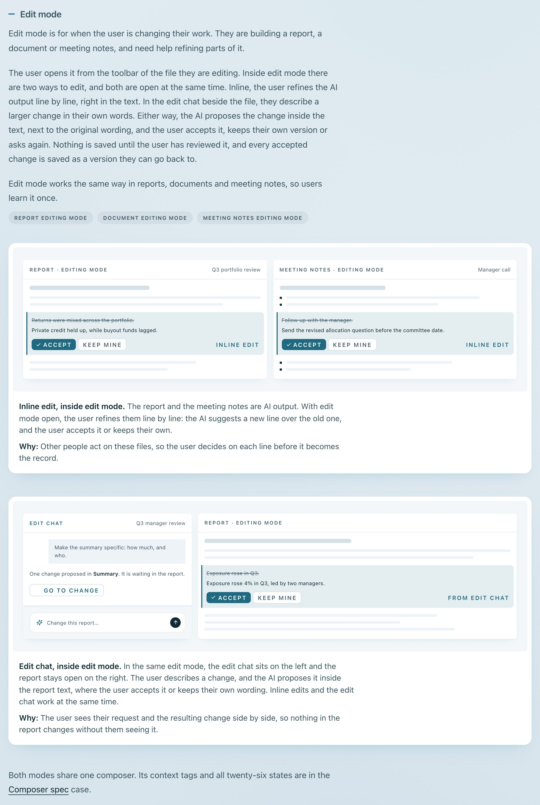
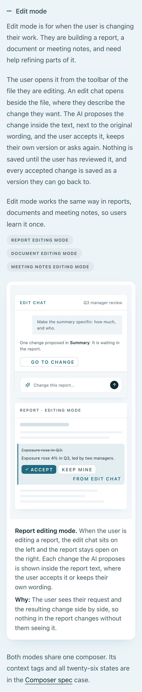
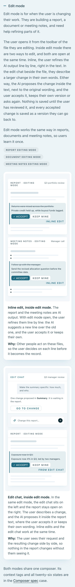

Round 5 · AI surfaces · 2026-09-27
Edit mode: one feature, two ways to edit
Your verdict: edit mode showed only the chat, and the inline edit had been lost. Now edit mode shows both ways of editing, open at the same time: inline, line by line on an AI output (a report and meeting notes), and the edit chat (the existing figure). Branch round-5-ai-edit, only ai-surfaces.html changed. Not deployed.
Desktop, 1400px


Phone, 375px


New copy for approval
Each line carries data-new-copy on the page until you approve it.
ai-surfaces-r5-edit-ways (second paragraph of Edit mode; first and last sentences unchanged)
An edit chat opens beside the file, where they describe the change they want. The AI proposes the change inside the text…
Inside edit mode there are two ways to edit, and both are open at the same time. Inline, the user refines the AI output line by line, right in the text. In the edit chat beside the file, they describe a larger change in their own words. Either way, the AI proposes the change inside the text, next to the original wording, and the user accepts it, keeps their own version or asks again.
ai-surfaces-r5-inline-caption
Inline edit, inside edit mode. The report and the meeting notes are AI output. With edit mode open, the user refines them line by line: the AI suggests a new line over the old one, and the user accepts it or keeps their own.
ai-surfaces-r5-inline-why
Why: Other people act on these files, so the user decides on each line before it becomes the record.
ai-surfaces-r5-chat-caption (replaces "Report editing mode. When the user is editing a report, the edit chat sits…")
Edit chat, inside edit mode. In the same edit mode, the edit chat sits on the left and the report stays open on the right. The user describes a change, and the AI proposes it inside the report text, where the user accepts it or keeps their own wording. Inline edits and the edit chat work at the same time.
ai-surfaces-r5-inline-mock (mockup text in the new figure)
Report · Editing mode, "Q3 portfolio review": Returns were mixed across the portfolio. → Private credit held up, while buyout funds lagged.
Meeting notes · Editing mode, "Manager call": Follow up with the manager. → Send the revised allocation question before the committee date. (reused from the figure removed in round 3)
Tag on each suggestion: "Inline edit" (the chat figure keeps "From edit chat", so the two sources read apart).
Questions
1. The inline suggestions are tagged "Inline edit", the chat one "From edit chat". Keep that difference, or tag all three "From edit chat" as the figure had it? Recommendation: keep the difference, it is what tells the two ways apart.
2. On phones the chat caption still says "on the left / on the right" while the panels stack (as before this round). Leave, or say "beside"? Recommendation: "beside".
Check
python3 harness/check.py ai-surfaces.html: PASS at 1400px and 375px. One warning on this page, FLW-02 strike-through, which the rule excepts for product mockups showing a deletion.